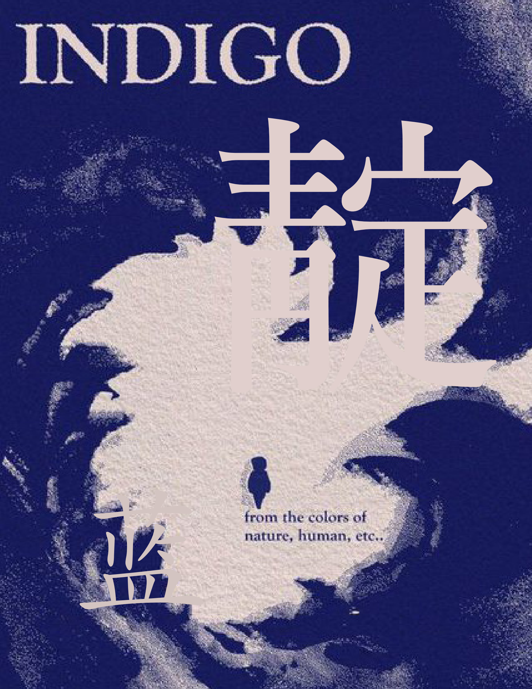
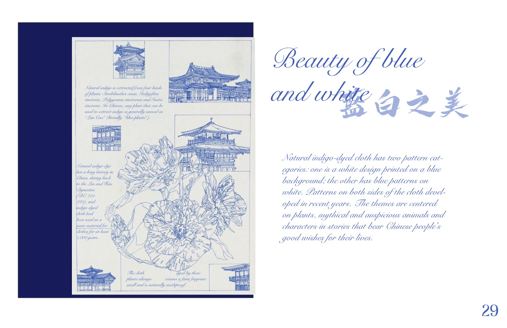
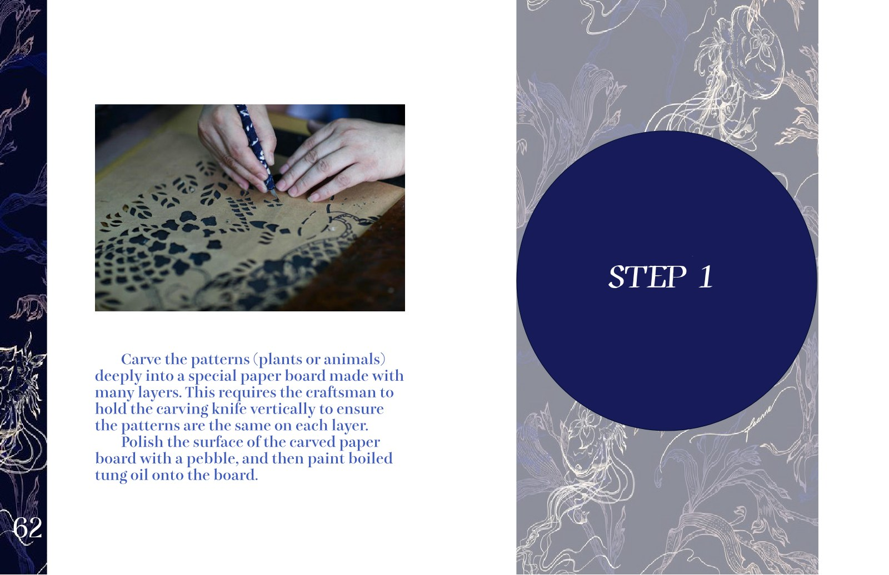

Indigo
Overview
A research publication on indigo dye and the people, plants, and techniques behind blue cloth in China and Japan.
Description
Indigo can be described as a color, a plant, or a dye. I brought together research on its chemistry, cultivation, and trade to follow how the blue is made. The book looks at textile traditions in China and Japan, including weaving and dyeing skills passed between generations of women.
I used blue and white throughout the book, with large Chinese characters dividing the sections. Photographs and numbered steps show processes such as dyeing and stencil carving. The sequence moves between finished patterns and the hands and tools used to make them, so readers can follow the work behind the cloth.
Guiding Questions:
Where does the blue in a piece of cloth come from?
How are dyeing techniques passed from one maker to another?
What do we miss when we look only at the finished textile?


